Jrava - GUI
Sample Java application with GUI, used to learn/practice OOD/OOP, GUI part.
Guidelines
In this second part, the goal is to implement a GUI (Graphical User Interface) from UML class diagrams, specifications given as generated Javadoc (Javadoc comments must be rewritten), and acceptance tests given as a document.
See also application description.
A few words about acceptance tests
Acceptance tests are commonly used to validate application behaviour, by interacting as a user through the application Man-Machine interface, according to User Stories (that can be mapped on Use Cases or at a finer grain).
Here, acceptance tests are given as an HTML document, that will help to understand GUI design/behaviour and its links with application model.
Each acceptance test is organized as preconditions (how to get to test point), actions (what action(s) need to be performed to complete user story), and expected behaviour (what is normally observed).
GUI overview
Below is a complete UML class diagram representing Jrava GUI:
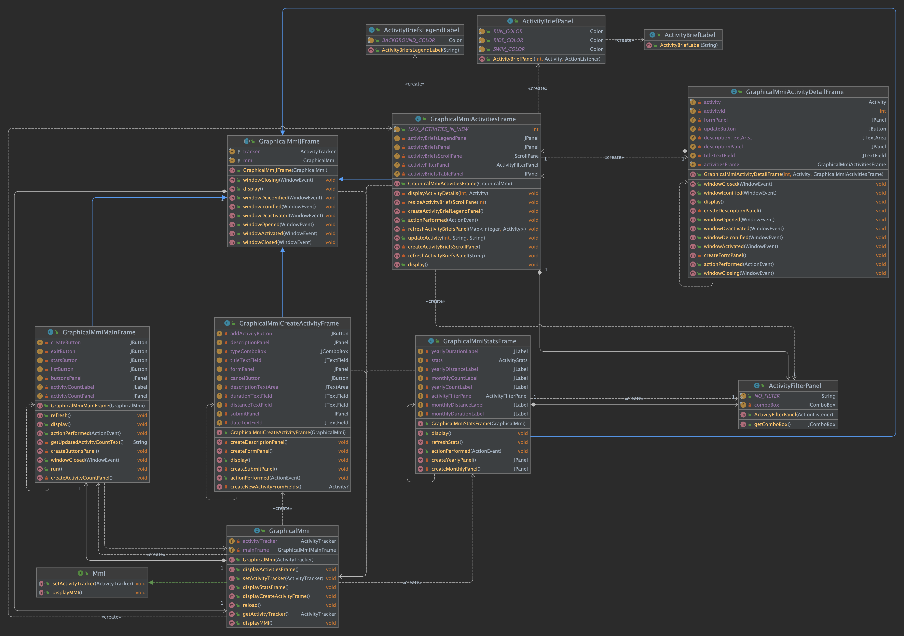
GraphicalMmi, like ConsoleMmi (the text-based Man-Machine interface), is an implementation of Mmi interface, as shown below:
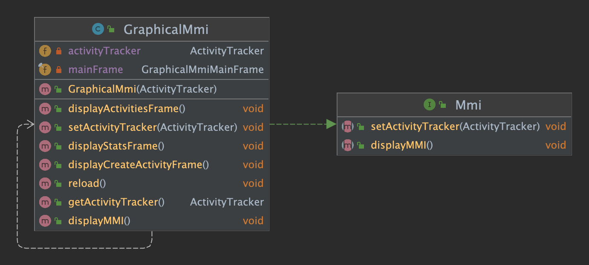
GraphicalMmi is in charge of displaying the main frame allowing to access to main features (activity creation, stats, ...) through a menu.
Each feature is associated to a dedicated frame (further called sub-frame):
GraphicalMmiMainFrame is the main frame, displaying the menu

GraphicalMmiCreateActivityFrame is the activity creation frame, allowing to create a new activity
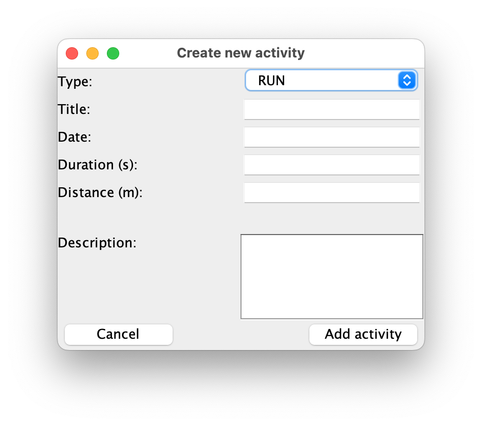
GraphicalMmiActivitiesFrame is the activity list frame, allowing to view activity briefs
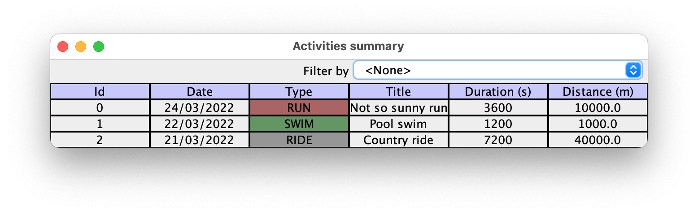GraphicalMmiStatsFrame is the stats frame, allowing to view monthly/yearly statistics
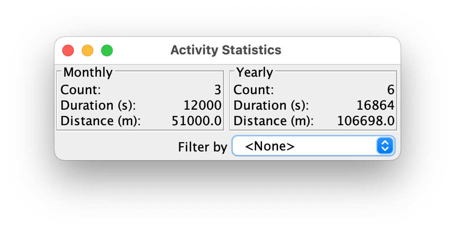
All these frames, like depicted below, are GraphicalMmiJFrame subclasses. GraphicalMmiJFrame is a convenience (abstract) superclass for all sub-frames, defining common structure and behaviour (see GraphicalMmi in Implementation section below).
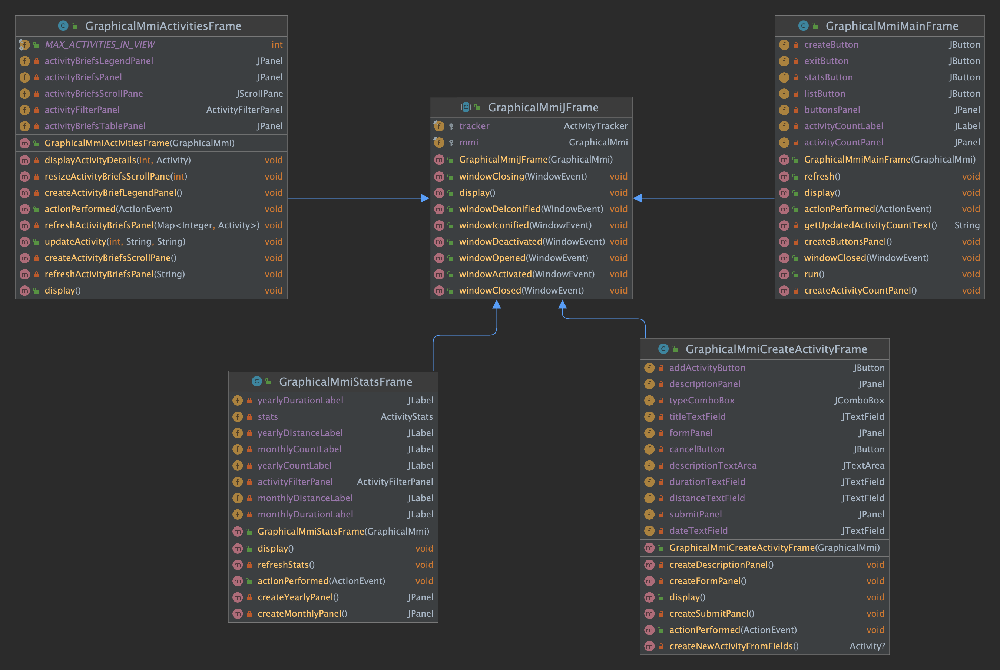
GraphicalMmiActivitiesFrame is in charge of displaying activity briefs, using a table style representation (legend row on top, followed by data rows). As presented below, it relies on several components (see Implementation section for details):
ActivityFilter, a reusable JPanel subclass that allows to filter activities by typeActivityBriefPanel, in charge of displaying a single activity brief
- relying on
ActivityBriefLabel, a reusable JLabel subclass that allows to display each column
ActivityBriefsLegendPanel, in charge of displaying table legend
- relying on
ActivityBriefLegendLabel, a reusable JLabel subclass that allows to display each column
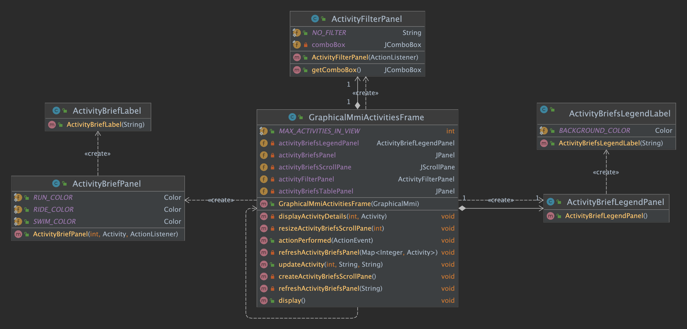
GraphicalMmiActivityDetailFrame (which is the only frame not being a buclass of GraphicalMmiJFrame), is in charge of displaying detailed view of a single activity that allows for title/description update. As shown below, it is created/displayed from activity list frame (GraphicalActivitiesFrame), activity to detail being selected by a click on id column, closing the detailed view getting back to activity list.
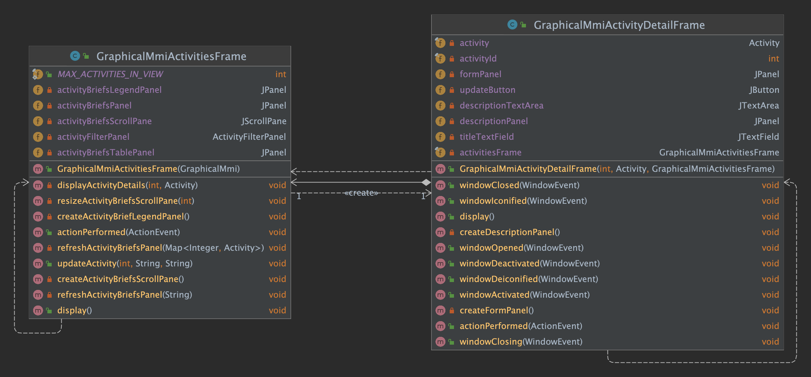
GraphicalMmiStatslFrame allow to display statistics, and relies on an activity filter:
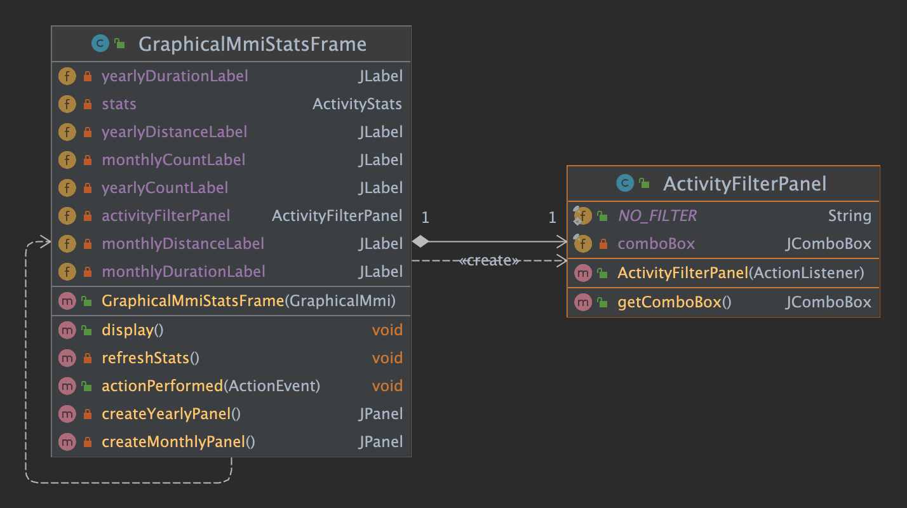
Implementation details
Below are given implementation details, in a suggested order to respect ;-)
GraphicalMmi
GraphicalMmi is the graphical implementation of Mmi interface.
- Its constructor links the created instance with activity tracker given as parameter, and creates a
GraphicalMmiMainFrame instance (without displaying it).
displayMMI method launches a new Swing task intending to display main framedisplayCreateActivityFrame intends to display Activity creation frame. To do so, it creates a new GraphicalMmiCreateActivityFrame instance and calls its display method.displayActivitiesFrame intends to display Activity list frame. To do so, it creates a new GraphicalMmiActivitiesFrame instance and calls its display method.displayStatsFrame intends to display Stats frame. To do so, it creates a new GraphicalMmiStatsFrame instance and calls its display method.reload method intends to reload this frame (after a sub-frame has been closed). To do so, it refreshes this frame and turns it visible again.
GraphicalMmiJFrame
GraphicalMmiJFrame is a convenience (abstract) superclass for all graphical mmi sub-frames (except activity detail frame). Frame is also its own window listener, allowing to reload main frame on closing, and defines dispose as a default close operation.
- Its constructor links the created instance to graphical mmi and activity tracker instances, adds itself as its window listener and sets default close operation to dispose.
display method packs the frame, turns it visible again, and prevents it to be resized.windowClosed method (overridden from WindowListener interface) disposes the frame and reloads graphical mmi.- N.B. all others methods overridden from
WindowListener interface have an empty implementation.
GraphicalMmiMainFrame
GraphicalMmiMainFrame if the main frame, displaying a menu to access main features.
It is also the Swing task displaying the frame itself, as well as the action listener registered on some of its sub-components (buttons).
It is composed by two panels (buttonsPanel and activityCountPanel), as shwon below:
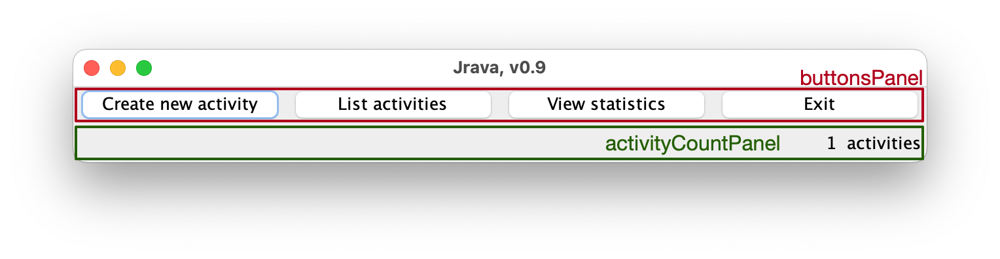
display method
- sets frame title
- sets content pane layout to Grid Layout (2 rows, 1 column)
- adds panels to it
buttonsPanel, created by createButtonsPanel methodactivityCountPanel, created by createactivityCountPanel method
createButtonsPanel creates the panel containing buttons
- panel layout is a (1 row, 4 columns) Grid Layout
- it contains 4 buttons (create/list/stats/exit)
- all buttons have the frame registered as action listener
createActivityCountPanel creates the panel displaying activity count
- panel layout is a (1 row, 1 column) Grid Layout
- panel contains a
JLabel, whose text is returned by getUpdatedActivityCountText method, and having an horizontal alignment set to RIGHT.
actionPerformed method (overridden from ActionListener interface)
- turns the frame to invisible
- identifies the button that has been clicked and either
- calls graphical mmi in order to display appropriate sub-frame
- disposes the frame and exits application (by calling
System.exit method)
run method (overridden from Runnable interface) displays this framewindowClosed method (overridden from GraphicalMmiJFrame class) disposes this frame
GraphicalMmiCreateActivityFrame
GraphicalMmiCreateActivityFrame is the activity creation frame, displaying a form that can be filled with activity data, cancelled or submitted. It is also the action listener registered on some of its sub-components (buttons).
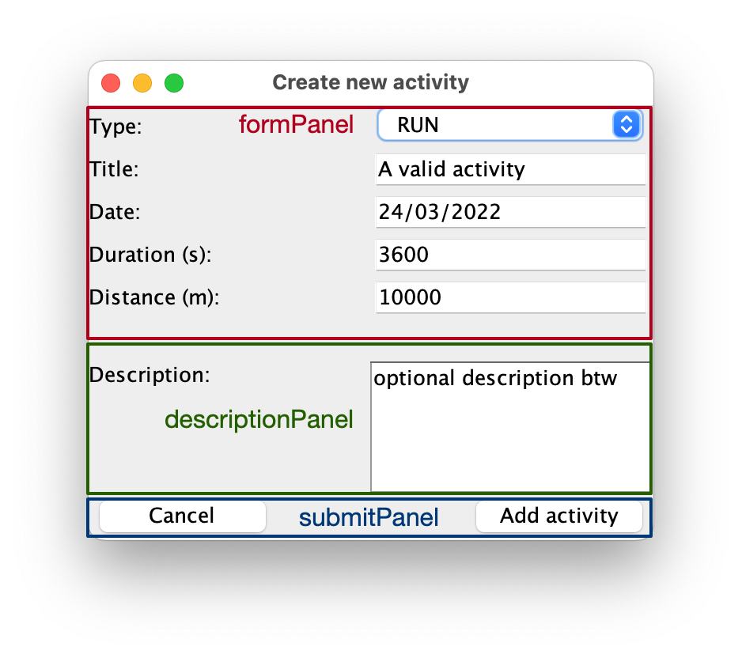
display method
- sets frame title
- sets content pane layout to GridBag Layout
- creates and sets GridBag constraints to
(fill = BOTH, gridx = 0)
- adds panels to it
formPanel, created by createFormPanel methoddescriptionPanel, created by createDescriptionPanel submitPanel, created by createSubmitPanel method
createFormPanel creates the panel containing the **upper part of the form ** (excluding description)
- panel layout is a (6 rows, 2 columns) Grid Layout
- panel contains
JLabel instances for each form fields legend- either
JComboBox or JTextField for form fields
createDescriptionPanel creates the panel containing the lower part of the form (including description)
- panel layout is a (1 row, 2 columns) Grid Layout
- panels contains
- a JScrollPane containing a (5 rows, 10 columns)
JTextArea with line-wrapping
- a
JLabel whose vertical alignment is set to TOP
createSubmitPanel creates the panel containing the buttons
- panel layout is a (1 row, 3 columns) Grid Layout
- panels contains two
JButton (Cancel, Submit), with a JLabel with a blank text (and so invisible) between them (to act as a spacer)
- all buttons have the frame registered as action listener
createNewActivityFromFields method creates a new activity from information filling the form, if possible
- an error message popup window (see
JOptionPane.showMessageDialog) is displayed in case of missing title, invalid date (wrong format, date in the future), invalid duration or distance. In that case, a null activity is returned.
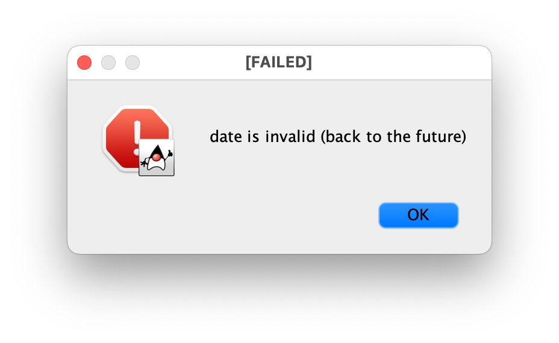
actionPerformed method (overridden from ActionListener interface)
- identifies the button that has been clicked. If it is Submit button, then it tries to add the activity to the tracker if created activity is not
null. It it fails, and error message popup is displayed
- disposes the frame and reloads graphical mmi
ActivityFilterPanel
ActivityFilterPanel is a reusable JPanel subclass that embeds a filtering combo box and allows to filter activities by type.
- the
NO_FILTER constant is a string (whose value is <None>) that allows to add an unfiltered choice to the combo box.
- Its constructor takes as parameter the action listener to register to the combo box. Then, it
- sets its layout (as a JPanel) to a (1 row, 2 columns) Grid Layout
- adds to its content
- a
JLabel whose horizontal alignment is set to RIGHT
- a
JComboBox populated with activity types + NO_FILTER
getComboBox method simply returns the combo box
ActivityBriefsLegendLabel
ActivityBriefsLegendLabel is a reusable JLabel subclass used to display each column of activity briefs table legend.
- Its constructor, taking label text as parameter, sets common properties:
- horizontal alignment is set to
CENTER
- component is turned opaque
- background color is set to
BACKGROUND_COLOR, whose RGB value is (200, 200, 250)
- component as a
BLACK line border (see BorderFactory.createLineBorder)
ActivityBriefsLegendPanel
ActivityBriefsLegendPanel is a JPanel containing ActivityBriefsLegendLabel instances and allowing to display activity briefs table legend.
- Its Constructor
- sets its layout (as a JPanel) to a (1 row, 6 columns) Grid Layout
- adds to its content a
ActivityBriefsLegendLabelinstance for each legend column
ActivityBriefLabel
ActivityBriefLabel is a reusable JLabel subclass used to display each column of a single activity brief.
- Its constructor, taking label text as parameter, sets common properties:
- horizontal alignment is set to
CENTER
- component as a
BLACK line border (see BorderFactory.createLineBorder)
ActivityBriefPanel
ActivityBriefPanel is a reusable JPanel subclass that allows to display each activity brief. It contains an ActivityBriefLabel for each column except for the first one which is a JButton allowing to select an activity for viewing its details.
- It defines 3 constants used for setting activity type column background color (associated label being set to opaque by the way)
RUN_COLOR, whose RGB value is (170, 100, 100)SWIM_COLOR, whose RGB value is (100, 150, 100)RIDE_COLOR, whose RGB value is (150, 150, 150)
- Its constructor, taking as parameters activity and its id as well as the action listener to be registered to the id button.
GraphicalMmiActivitiesFrame
GraphicalMmiActivitiesFrame is the list activity frame, in charge of displaying activity briefs. It is also the action listener registered on some of its sub-components (buttons).
This frame displays activity briefs in a table style, with a legend on top-row. Activities to display can be filtered by type, but the list remains unsorted.
Activity briefs in view are limited to 10 (value of MAX_ACTIVITIES_IN_VIEW constant), if there are more activities than that then a scroll bar appears to scroll up/down (this is the puprose of a scrollpane).
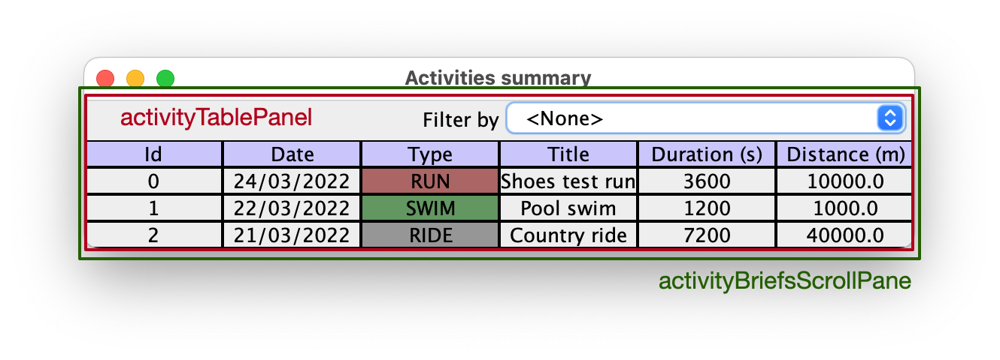
display method
- sets frame title
- sets content pane layout to GridBag Layout
- creates and sets GridBag constraints to
(fill = BOTH, gridx = 0)
- adds two panels to it (whose one is a scrollpane actually)
activityFilterPanel, an 'ActivityFilterPanelInstance` whose action listener is the frame itselfactivityBriefsScrollPane, created by createActivityBriefsScrollPane method. Before adding this panel, (weighty = 1) is added as a layout constraint
- packs frame
- resize scrollpane by a call to
resizeActivityBriefsScrollPane, in order to match activity count with regards to the maximum amount of activities in view (see setPreferedSize in JComponent)
createActivityBriefScrollPane creates the scrollpane displaying the table
- its horinzontal scrollbar policy is set to
.HORIZONTAL_SCROLLBAR_NEVER
- it contains a
JPanel (whose reference is kept in activityBriefsTablePanel attribute), whose layout is GridBag Layout with constraints intially set to (fill = BOTH, gridx = 0), and whose content is
- a
JPanel (whose reference is kept in activityBriefsLegendPanel attribute), created by a call to createActivityBriefLegendPanel method
- a
JPanel (whose reference is kept in activityBriefsPanel attribute), whose content is then refreshed by a call to refreshActivityBriefsPanel method. Before adding this panel, (weighty = 1) is added as a layout constraint
GraphicalMmiActivityDetailFrame
GraphicalMmiActivityDetailFrame is the view activity detail frame, in charge of displaying activity details and allowing to update title/description. It is also the action listener registered on update button.
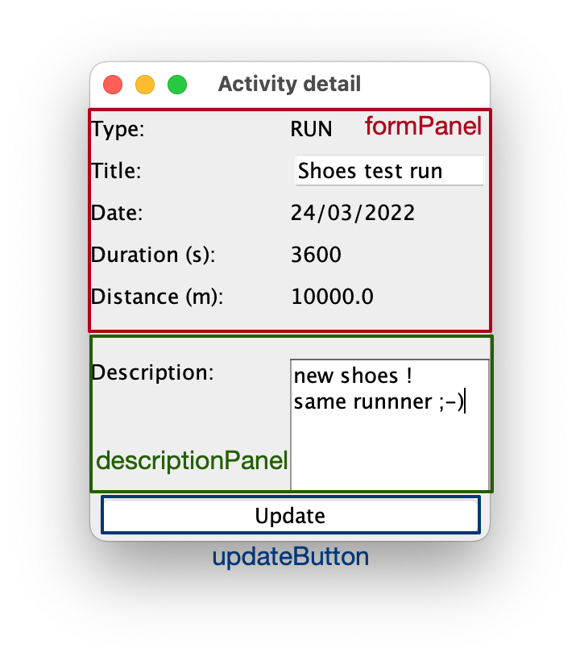
- Its constructor
- links the created instance with list activities frame, activity and activity id given as parameter.
- register the frame as its own window listener
- defines dispose as a default close operation
display method
- sets frame title
- sets content pane layout to GridBag Layout
- creates and sets GridBag constraints to
(fill = BOTH, gridx = 0)
- adds two panels to it (whose one is a scrollpane actually)
formPanel, created by createFormPanel methoddescriptionPanel, created by createDescriptionPanel method
- adds a
JButton to it (regitering the frame as its action listener)
- packs the frame, turns it visible again, and prevents it to be resized.
createFormPanel creates the panel containing the **upper part of the form ** (excluding description)
- panel layout is a (6 rows, 2 columns) Grid Layout
- panel contains
JLabel instances for each form fields legend- either
JComboBox or JTextField for form fields
createDescriptionPanel creates the panel containing the lower part of the form (including description)
- panel layout is a (1 row, 2 columns) Grid Layout
- panels contains
- a JScrollPane containing a (5 rows, 10 columns)
JTextArea with line-wrapping
- a
JLabel whose vertical alignment is set to TOP
actionPerformed method (overridden from ActionListener interface)
- checks if the event source is update button. If so, it updates activity (by a call to
updateActivity on GraphicalMmiActivitiesFrame instance) and finally calls windowsClosed.
windowClosed method (overridden from GraphicalMmiJFrame class) disposes this frame- N.B. all others methods overridden from
WindowListener interface have an empty implementation.
ActivityStatsPanel
ActivityStatsPanel is a reusable JPanel allowing to display activity statistics (count, total duration, total distance).
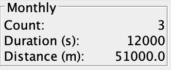
- Its Constructor
- sets its layout (as a JPanel) to a (1 row, 6 columns) Grid Layout
- adds to its content a
ActivityBriefsLegendLabelinstance for each legend column
GraphicalMmiStatsFrame
GraphicalMmiStatsFrame is the statistics frame, in charge of displaying monthly/yearly statistics and allowing to filter by activity type.
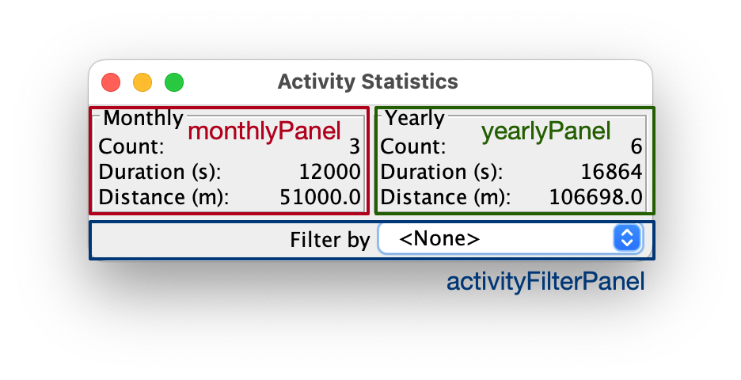
- Its constructor retrieves statistics (and store it in
stats attibute)
display method
- sets frame title
- sets content pane layout to GridBag Layout
- creates and sets GridBag constraints to
(fill = BOTH, gridx = 0)
- adds two panels to it (whose one is a scrollpane actually)
formPanel, created by createFormPanel methoddescriptionPanel, created by createDescriptionPanel method
- adds a
JButton to it (regitering the frame as its action listener)
- packs the frame, turns it visible again, and prevents it to be resized.
createFormPanel creates the panel containing the **upper part of the form ** (excluding description)
- panel layout is a (6 rows, 2 columns) Grid Layout
- panel contains
JLabel instances for each form fields legend- either
JComboBox or JTextField for form fields
createDescriptionPanel creates the panel containing the lower part of the form (including description)
- panel layout is a (1 row, 2 columns) Grid Layout
- panels contains
- a JScrollPane containing a (5 rows, 10 columns)
JTextArea with line-wrapping
- a
JLabel whose vertical alignment is set to TOP
actionPerformed method (overridden from ActionListener interface)
- checks if the event source is update button. If so, it updates activity (by a call to
updateActivity on GraphicalMmiActivitiesFrame instance) and finally calls windowsClosed.
windowClosed method (overridden from GraphicalMmiJFrame class) disposes this frame- N.B. all others methods overridden from
WindowListener interface have an empty implementation.